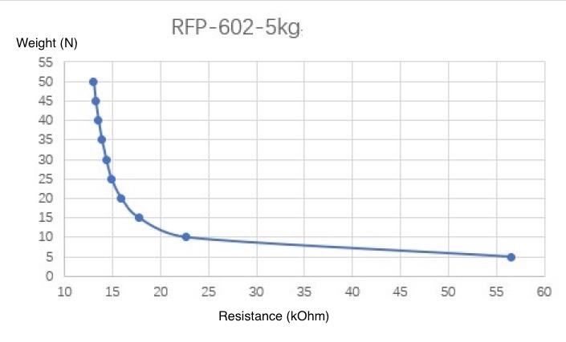

This week, I began working on 2 of the important components of our project—the Peltier Cooler and the pressure sensor. The Peltier Cooler module will be attached to the user’s glove. The specific location of attachment as well as the number of modules that will be used in our project has yet to be determined. It was discussed in week 3’s lab that instead of using 5 modules on all the fingertips, it is possible to substitute that method with using only 1 module on the palm of the hand. The reason for this proposal is that we may run into the problem of not having enough number of ADCs on our microcontroller. In addition, the glove may become very bulky which takes away from the user experience.
One of the concerns with the module that will be used in our project is the reaction time that the module will use. We investigated whether the change in heat will be rapid enough for the human skin to notice. The results of our investigation are that the cooling effect takes approximately 1 second to notice and the heating effect takes approximately 2 seconds to notice. Although the reaction times seems to be very slow (it was proposed by Prof. Mithuna that it should be kept around 0.5 seconds), in reality, a change that takes 2 seconds to notice actually feels almost instantaneous to the human skin.
The pressure sensor will be attached to the fingertips of the robotic hands. I researched the approximate maximum amount of force that our robotic hand will be expected to come across and decided that 300g is an appropriate value. I got this number from holding a can of coke (340g) [1] on my fingertip. It is difficult to hold this much weight for a long time, from my personal past experiences, this felt like a greater force than what my fingers will typically come across. The pressure vs. resistance values are also plotted in graph 1.
[1] Coca-Cola Products, “Original 12fl oz.,” coca-colaproductfacts.com/, n.d.. [Online]. Available: https://www.coca-colaproductfacts.com/en/products/coca-cola/original/12-oz/. [Accessed Sept. 06, 2018].